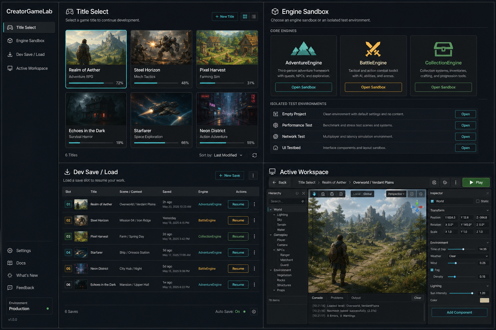

実装では4分割にしない
この画像は全体の雰囲気と情報設計の確認用です。Workspace以外はこのLayoutを基準にし、実アプリでは Sidebar + Full Page View として各画面を広く表示します。
- Title Select: tile-window基調のタイトルギャラリー
- Engine Sandbox: tile-window基調の試験室一覧
- Dev Save / Load: tile-window基調の再開スロット一覧
- Component Registry: Dynamic差し替え候補一覧
- Workspace: ワイヤーフレームの遷移先だけ確保